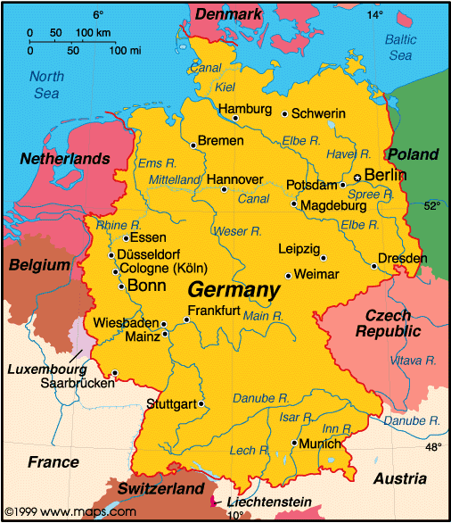

I attended Knightdale High School and graduated with a 4.2 GPA. During my time at Knightdale High, I co-founded the Key Club, Yearbook Editor, and was the Secretary for the National Honor Society. Once I graduated, I attended Elon University where I'm currently studying Strategic Communications and Professional Writing. Some of my favorite courses have included Journalism in a Free Society, Public Relations, and Introduction to Sociology. During January 2024, I am going to Germany, Poland, and Austria for my J-Term. I am expected to tour some of the concentration camps, Berlin, Vienna, and some other historic sites.
Prior to attending Elon University, I forbidden myself to rush a sorority. I would hear all these horror stories from other univerities about how terrible their experiences were and wouldn't recommend it. These comments made me not want to rush and participate in other on-campus activities. However, this all changed. During January 2022, I decided to rush and joined the sorority--Alpha Xi Delta. It was one of the best decisions I could've made. I met some of the best people and gained very valuable friendships! Joining a sorority has made my Elon experience.